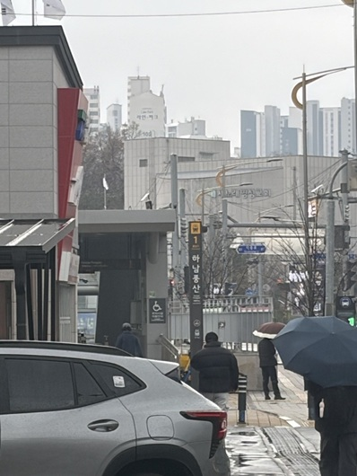
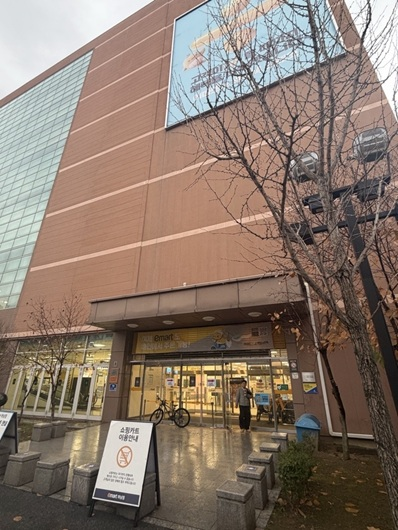
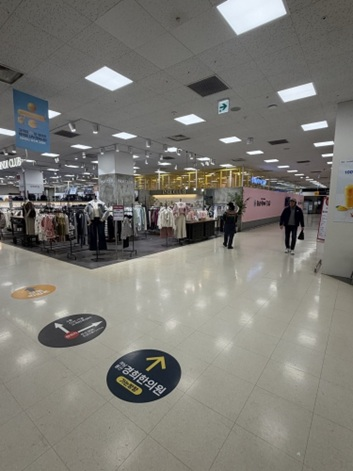
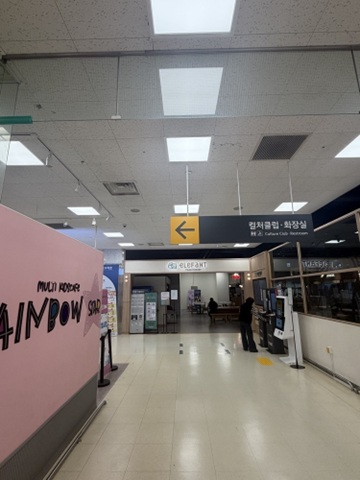
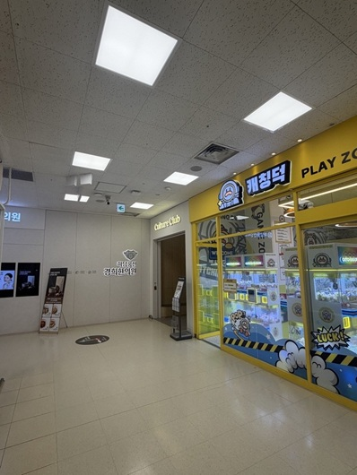
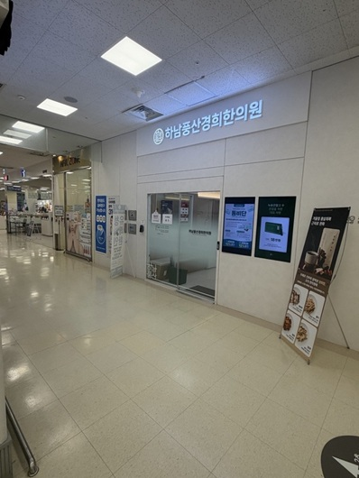

지하철 5호선 하남풍산역 1번 출구에서 도보 1분
이마트 하남점 1층(문화센터 옆)에 위치
처음 방문하시는 분들도 쉽게 찾아오실 수 있도록
사진과 함께 위치를 안내해 드립니다.

지하철 5호선 하남풍산역 1번 출구로 나오신 후, 전방에 보이는 이마트 하남점 건물 방향으로 직진해 주세요.

이마트 하남점 1층 정문 출입구로 들어오세요.

정문 진입 후 층 이동 없이 1층 통로를 따라 그대로 직진해 주세요. 바닥에 부착된 '하남풍산경희한의원 가는 방향' 원형 유도 스티커를 따라오시면 더욱 쉽습니다. (왼편 의류 매장 INDI CLUB 및 분홍색 외벽 키즈카페 방면 통로)

통로 끝자락에 보이는 푸드코트(ELEFANT) 입구 정면에서 좌회전해 주세요. 천장에 달린 '컬처클럽(Culture Club)·화장실' 노란색 좌회전 표지판을 확인하시면 편리합니다.

좌회전 후 직진하시면 오른편에 노란색 간판의 인형뽑기 매장(캐칭덕)과 이마트 문화센터(Culture Club) 입구가 보입니다. 문화센터 입구 바로 왼쪽 벽면에 한의원 안내 사인이 위치해 있습니다.

문화센터(Culture Club) 바로 옆에 위치한 하남풍산경희한의원 정문에 도착했습니다. 편안한 마음으로 들어오시면 친절히 안내해 드리겠습니다.
문화센터(Culture Club) 옆
도보 1분 거리
접수 마감 오후 8:00
평일 점심시간 오후 1:30 ~ 2:30
접수 마감 오후 4:00
점심시간 없이 진료
교통사고 · 추나치료 · 약침치료
탕약 · 환약 · 라인약침
맞춤탕약 · 자하거약침
안면마비 · 턱관절질환 · 비염